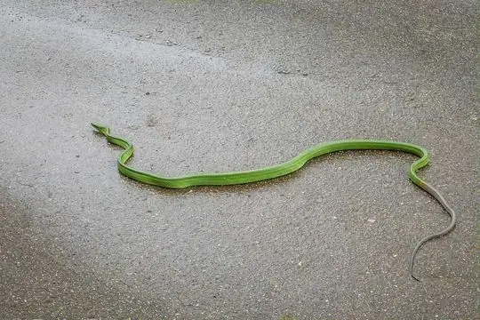

Snakes of Belitung
An island of Indonesia
17 snake species are recorded in Belitung, an island of Indonesia, in SnakeList: 4 venomous and 13 non-venomous, from 4 families.
- 17species
- 4venomous
- 13non-venomous
- 4families
SnakeList records where snakes live by country and by island, not by exact spot, so a species listed here may live in only part of Belitung. All snakes of Indonesia.
Most widely recorded
The species here that have research-grade iNaturalist records in the most places across their whole range - not just in Belitung. That shows how often people have photographed them, not how many live here.

Red-Tailed RacerGonyosoma oxycephalum Paradise Tree SnakeChrysopelea paradisi
Paradise Tree SnakeChrysopelea paradisi Yellow striped SnakeCoelognathus flavolineatus
Yellow striped SnakeCoelognathus flavolineatus Rainbow Mud SnakeEnhydris enhydris
Rainbow Mud SnakeEnhydris enhydris Dog-toothed Cat SnakeBoiga cynodon
Dog-toothed Cat SnakeBoiga cynodon Equatorial Spitting CobraNaja sumatrana
Equatorial Spitting CobraNaja sumatrana Elegant BronzebackDendrelaphis formosus
Elegant BronzebackDendrelaphis formosus Gold-ringed Cat Snake (dendrophila)Boiga dendrophila
Gold-ringed Cat Snake (dendrophila)Boiga dendrophila
Snake families
Venomous and non-venomous
Venomous: 4Non-venomous: 13
2 are listed by SnakeList as dangerous to people: Equatorial Spitting Cobra Naja sumatrana, Red-headed Krait Bungarus flaviceps.
The other venomous ones have mild venom: no serious bites to people are documented for them.
Habitats (rough estimate)
How many of its living snakes have each kind of habitat in SnakeList’s estimate. That estimate comes from every country, state and province where each snake is recorded - not from a survey of Belitung, and not checked species by species.
Who described them
The scientists who first described its most widely recorded snakes, and when.
- Red-Tailed Racer Gonyosoma oxycephalum -
- Paradise Tree Snake Chrysopelea paradisi -
- Yellow striped Snake Coelognathus flavolineatus -
- Rainbow Mud Snake Enhydris enhydris -
- Dog-toothed Cat Snake Boiga cynodon -
- Equatorial Spitting Cobra Naja sumatrana -
- Elegant Bronzeback Dendrelaphis formosus -
- Gold-ringed Cat Snake (dendrophila) Boiga dendrophila -
Names and dates come from SnakeList’s reviewed species accounts; the others are looked up on Wikidata (CC0) when this page opens.
Nearby islands
The closest other islands of Indonesia in SnakeList.
- Karimata Archipelago 1 species
- Bangka 24 species
- Lingga Archipelago 1 species
- Java 85 species
- Riau Archipelago 11 species
All 17 species
- Blackwater Mud Snake Phytolopsis punctata
- Dog-toothed Cat Snake Boiga cynodon venomous
- Eight-striped Kukri Snake Oligodon octolineatus
- Elegant Bronzeback Dendrelaphis formosus
- Equatorial Spitting Cobra Naja sumatrana venomous
- Gold-ringed Cat Snake (dendrophila) Boiga dendrophila venomous
- Javanese Reed Snake Calamaria javanica
- Malayan Many-tooth Snake Sibynophis melanocephalus
- Painted Mock Viper Psammodynastes pictus
- Paradise Tree Snake Chrysopelea paradisi
- Rainbow Mud Snake Enhydris enhydris
- Red-headed Krait Bungarus flaviceps venomous
- Red-Tailed Racer Gonyosoma oxycephalum
- Reuss' Mud Snake Miralia alternans
- Spotted Keelback Xenochrophis maculatus
- White-bellied Rat Snake Ptyas fusca
- Yellow striped Snake Coelognathus flavolineatus
No snake here matches that.